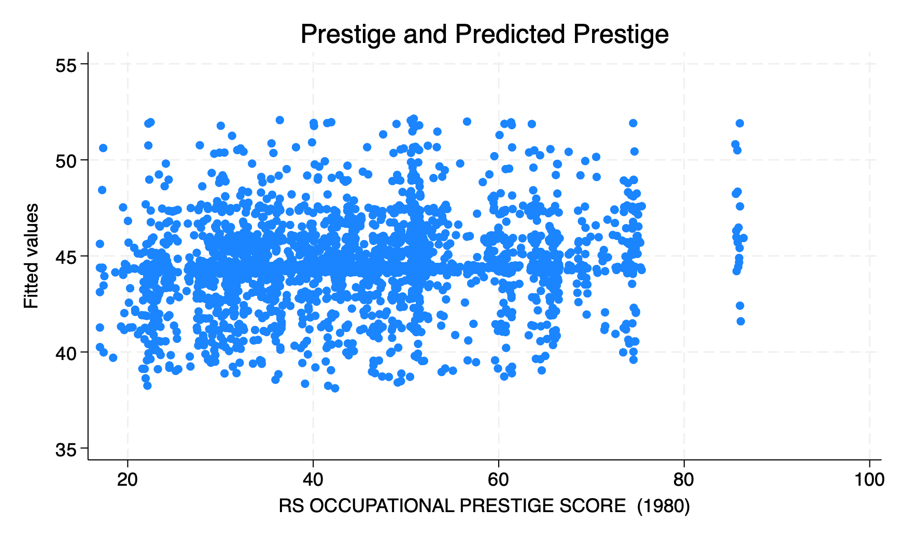
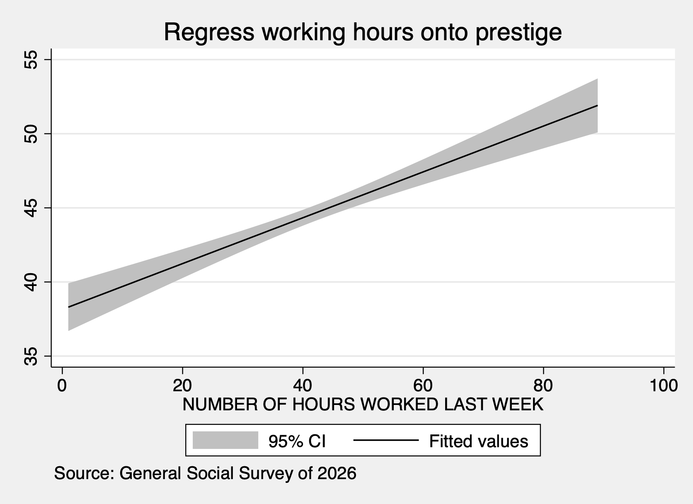
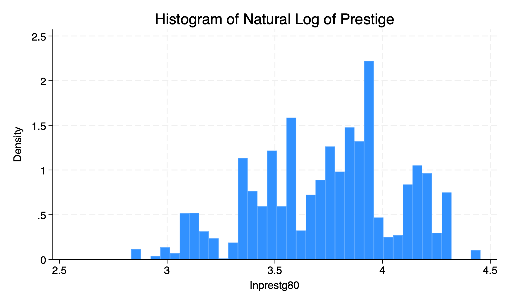
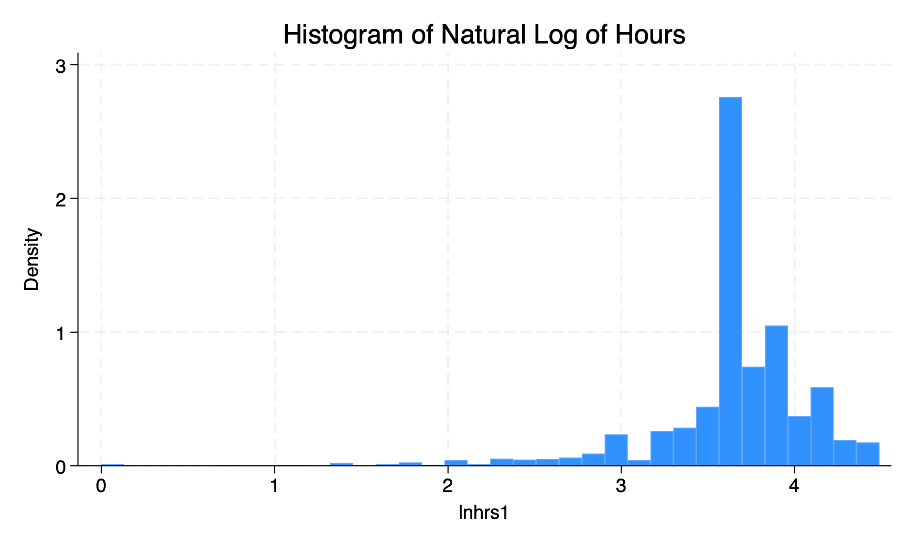

Chapter 1 Simple Linear Regression in Stata
Our model for a simple bivariate linear regression is the following:
\[ y_i = \beta_0 + \beta_1 x_i + \varepsilon_i\]
1.1 Simple Linear Regression Model
Using the 2006 General Social Survey, we will look at the association between occupational prestige and hours worked. We will set up our bivariate linear regression model as the following:
\[ prestige80_i=\beta_0 + \beta_1 hrs_i + \varepsilon_i \]
1.1.1 Set up your null hypothesis
Next, we will set up a null hypothesis:
\[ H_{0}: \beta_1 = 0 \]
\[ H_{a}: \beta_1 \neq 0 \]
Notice for that this will use a two-tailed test instead of a one tailed test. We can set \(\alpha=0.05\), so we will need to look up the critical \(t\) value for \(t_{0.05/2}\) or \(t_{0.025}\).
1.1.2 Descriptive Statistics
First, let’s look at the descriptive statistics
/Users/Sam/Desktop/Econ 643/AGIS
(General Social Surveys, 1972-2006 [Cumulative File], Dataset 0001)
Variable | Obs Mean Std. dev. Min Max
-------------+---------------------------------------------------------
prestg80 | 4,270 44.16745 13.99946 17 86
hrs1 | 2,739 42.07631 14.23166 1 89We can see that the dependent variable’s mean is 44.2 with a standard deviation of 14.0 and its range is \([17, 86]\). The independent variable’s mean is 42.1 hours with a standard deviation of 14.2 hours and its range is \([1,89]\) hours per week.
Note: There are 4,270 observations with occupational prestige, but only 2,739 have reported hours per week.
1.1.3 Simple Bivariate Linear Regression
Next, we will use the regress command to run a linear regression. We use regress \(y\) \(x\) to regress \(y\) onto \(x\).
Source | SS df MS Number of obs = 2,715
-------------+---------------------------------- F(1, 2713) = 67.32
Model | 13125.035 1 13125.035 Prob > F = 0.0000
Residual | 528901.224 2,713 194.950691 R-squared = 0.0242
-------------+---------------------------------- Adj R-squared = 0.0239
Total | 542026.259 2,714 199.714908 Root MSE = 13.962
------------------------------------------------------------------------------
prestg80 | Coefficient Std. err. t P>|t| [95% conf. interval]
-------------+----------------------------------------------------------------
hrs1 | .1546416 .0188468 8.21 0.000 .117686 .1915972
_cons | 38.14733 .8362129 45.62 0.000 36.50765 39.78701
------------------------------------------------------------------------------Let’s look at these results. We see that:
\[ \hat{y} = 38.1 + 0.155x \]
1.1.4 Look up the Critical Values
First, let’s find our sample size and get our degrees of freedom. We see that \(n=2,715\) and our \(df=2,714\), so our \(t_{0.025} \approx 1.96\)
1.1.5 Test the Null Hypothesis
From our Stata output, we can see that \(t=8.21\) and \(p=0.000\).
Using the rejection rule with critical \(t\) values, we see that \(8.21 > 1.96\), so we reject the null hypothesis at the \(5\%\) level.
Using the rejection rule with \(p\)-values, we see that \(0.000<0.05\), so we reject the null hypothesis at the \(5\%\) level and conclude that \(\beta_1\) does not equal 0. Furthermore, our \(p\)-value shows that we would reject the null hypothesis at the \(0.1\%\) level, as well.
1.1.6 Goodness of Fit and Sum of Squares
We can see our goodness of fit is \(R^2=0.024\) or variation in hours explains \(2.4\%\) of the variation in prestige.
Recall that \(R^2=SSE/SST\) or \(R^2=SSR/SST\).
We can see this where \(R^2=\frac{13125.035}{542026.259}=0.024\) or \(R^2=1-\frac{528901.224 }{542026.259}=0.024\).
1.1.7 Overall Model
One thing we haven’t covered is the \(F\) test statistic. This test statistics shows how the model compares to no model (just an intercept). So, our null hypothesis is that no model is better than our current model. Looking at the \(p\)-value below the \(F\) test statistic, we reject the null hypothesis at the \(0.1\%\) level.
1.2 Predicted \(y\) and Graph Predicted \(y\)
We can use the post-estimation command predict to calculate fitted values of \(y\), which we will call \(\hat{y}\)
We cannot predict \(\hat{y}\) with the predict command without the regress command. The predict command is a post-estimation command, which means that it must come after a regress command.
(option xb assumed; fitted values)
(1,771 missing values generated)Let’s compare \(y\) and \(\hat{y}\) with a scatter plot.

We can use a twoway using a lfitci line graph. The lfitci will produce a simple bivariate linear regression between prestige and hours. It will also plot the confidence interval around the regression line.
twoway (lfitci prestg80 hrs1), scheme(s2mono) title("Regress working hours onto prestige") caption("Source: General Social Survey of 2026")
1.3 Interpretations
We have four way to interpret a simple linear regression depending on the transformation of the dependent or independent variable.
- Linear-linear model
- Log-linear model.
- Linear-log model.
- Log-Log model
First we need to create our natural log transformations of \(x\) and \(y\). We can use the ln function in Stata.
(4,510 missing values generated)
(2,739 real changes made)
(0 real changes made)
(4,510 missing values generated)
(4,270 real changes made)
(0 real changes made)
Variable | Obs Mean Std. dev. Min Max
-------------+---------------------------------------------------------
lnhrs1 | 2,739 3.661178 .455948 0 4.488636
lnprestg80 | 4,270 3.735998 .3278086 2.833213 4.454347Let’s inspect the natural log transformation of prestige.

Next, let’s inspect the natural log transformation of hours worked.

1.3.1 Linear-Linear Model
\[ y_i = \beta_0 + \beta_1 x_i + \varepsilon_i \]
Let’s rerun our linear-linear model and recall that \(\Delta y = \beta_1 \Delta x_1\), so we interpret \(\beta_1\) as a one-unit increase in \(x\) leads to a \(\beta_1\) increase in \(y\).
Source | SS df MS Number of obs = 2,715
-------------+---------------------------------- F(1, 2713) = 67.32
Model | 13125.035 1 13125.035 Prob > F = 0.0000
Residual | 528901.224 2,713 194.950691 R-squared = 0.0242
-------------+---------------------------------- Adj R-squared = 0.0239
Total | 542026.259 2,714 199.714908 Root MSE = 13.962
------------------------------------------------------------------------------
prestg80 | Coefficient Std. err. t P>|t| [95% conf. interval]
-------------+----------------------------------------------------------------
hrs1 | .1546416 .0188468 8.21 0.000 .117686 .1915972
_cons | 38.14733 .8362129 45.62 0.000 36.50765 39.78701
------------------------------------------------------------------------------We reject the null hypothesis that \(H_0: \beta_1 = 0\) at the 0.1% level and we interpret this as a \(1\) hour increase is associated with a 0.155 increase in prestige.
Question: what does \(\beta_0\) represent?
1.3.2 Linear-Log Model
\[ y_i = \beta_0 + \beta_1 ln(x_i) + \varepsilon_i \]
Let’s run a linear-log model where the dependent variable is not log transformed but the independent variable is log transformed.
We interpret \(\beta_1\) as a \(1\%\) increase in \(x\) is associated with a \(\frac{\beta_1}{100}\) increase in \(y\)
Source | SS df MS Number of obs = 2,715
-------------+---------------------------------- F(1, 2713) = 48.89
Model | 9594.06348 1 9594.06348 Prob > F = 0.0000
Residual | 532432.196 2,713 196.252192 R-squared = 0.0177
-------------+---------------------------------- Adj R-squared = 0.0173
Total | 542026.259 2,714 199.714908 Root MSE = 14.009
------------------------------------------------------------------------------
prestg80 | Coefficient Std. err. t P>|t| [95% conf. interval]
-------------+----------------------------------------------------------------
lnhrs1 | 4.115376 .5885935 6.99 0.000 2.961239 5.269513
_cons | 29.58522 2.170863 13.63 0.000 25.3285 33.84193
------------------------------------------------------------------------------We reject the null hypothesis that \(H_0: \beta_1 = 0\) at the 0.1% level and we interpret this as a \(1\%\) increase in hours is associated with a \(\frac{4.12}{100}=0.0412\) increase in prestige.
1.3.3 Log-Linear Model
\[ ln(y_i) = \beta_0 + \beta_1 x_i + \varepsilon_i \]
Let’s run a log-linear model, where the dependent variable is log transformed but the independent variable is not log transformed.
We interpret this as a interpret \(\beta_1\) as a 1-unit increase in \(x\) is associated with a \((e^{\beta_{1}}-1)*100 \%\) increase in \(y\).
Source | SS df MS Number of obs = 2,715
-------------+---------------------------------- F(1, 2713) = 75.24
Model | 7.87166582 1 7.87166582 Prob > F = 0.0000
Residual | 283.847275 2,713 .104624871 R-squared = 0.0270
-------------+---------------------------------- Adj R-squared = 0.0266
Total | 291.718941 2,714 .107486714 Root MSE = .32346
------------------------------------------------------------------------------
lnprestg80 | Coefficient Std. err. t P>|t| [95% conf. interval]
-------------+----------------------------------------------------------------
hrs1 | .0037871 .0004366 8.67 0.000 .002931 .0046432
_cons | 3.587671 .0193719 185.20 0.000 3.549686 3.625656
------------------------------------------------------------------------------We reject the null hypothesis that \(H_0: \beta_1 = 0\) at the 0.1% level and we interpret that a 1-unit increase in hours is associated with a \((e^{.0037871}-1)*100 \% = .38\%\) increase in occupational prestige.
1.3.4 Log-Log Model
With a log-log model, we interpret A 1% increase in years of education is associated with a 𝛽_1% change in wages
\[ ln(y_i) = \beta_0 + \beta_1 ln(x_i) + \varepsilon_i \]
We interpret \(\beta\) as a 1% increase in \(x\) is associated with a \(\beta_1\%\) change in \(y\).
Source | SS df MS Number of obs = 2,715
-------------+---------------------------------- F(1, 2713) = 57.58
Model | 6.06313896 1 6.06313896 Prob > F = 0.0000
Residual | 285.655802 2,713 .105291486 R-squared = 0.0208
-------------+---------------------------------- Adj R-squared = 0.0204
Total | 291.718941 2,714 .107486714 Root MSE = .32449
------------------------------------------------------------------------------
lnprestg80 | Coefficient Std. err. t P>|t| [95% conf. interval]
-------------+----------------------------------------------------------------
lnhrs1 | .1034563 .0136334 7.59 0.000 .0767234 .1301892
_cons | 3.368208 .0502831 66.98 0.000 3.269611 3.466805
------------------------------------------------------------------------------We reject the null hypothesis that \(H_0: \beta_1 = 0\) at the 0.1% level and we interpret this as a \(1\%\) increase in hours is associated with a \(0.1\%\) increase in occupational prestige.